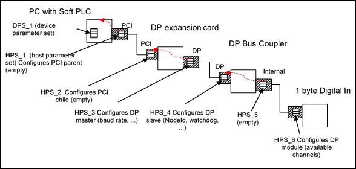

5.7.3.3. Device Descriptions¶
To use a device in the device configuration tree in CODESYS, the device must be completely described in XML (device description file). This includes the description of device parameters and connectors. The device description file contains all information for:
Getting inserted the device object at the correct position in the I/O-configuration tree
Getting displayed and editable the device parameters in the user interface
Optionally getting specified an I/O driver that operates the device
See in the following general information on connectors (connectors), parameters (parameters) and IO-mapping (io_mapping).
See (Device Description) for information on particular device description file entries.
There are some compiler defines, which can predefined in the device description of a PLC. See Compiler defines for IO-configuration for detailed information.
Connectors¶
Connectors form the connections between devices and have their own configuration data in the form of a parameter set. So a device is fully described with a single child connector, one or more parent connectors and a set of so-called parameters for each connector. Parameters hold the information to configure a connector (e.g. baud rate of a Profibus master connector). An I/O-channel is described as a parameter too.
Connectors can only be connected with each other if they have the same interface. Interfaces are identified via a string. A manufacturer abbreviation used as a prefix for this string defines a namespace and ensures uniqueness of the interface names across manufacturers. The “Common” namespace contains generally used interfaces specified by 3S, e.g.:
“Common.PCI”: Standard PCI connection “Common.DP”: Profibus “Common.CANopen”: CANopen network
Device manufacturers can define own (internal and external) interfaces within their namespace.
The interface initially only defines the type of devices that can be connected to a connector. More control over the number of possible children and the representation is provided through the definition of adapters within a parent connector. Three types of adapters are available:
Fixed: Specifies that a certain child is always present.
This is used, for example, for hard-wired I/Os that the user cannot install or remove. The user cannot remove these devices.
Slot: Defines a slot as used in expandable controllers, for example. The number of slots is fixed, while modules can be replaced or (optional) removed altogether, leaving an empty slot.
Var: Defines an adapter to which any number of children (up to a specified upper limit) can be connected and disconnected. This corresponds to the model of field bus to which new devices can be added.
Each type has its own module Id so that an I/O driver can recognize the connector type in the runtime system. The parameter profile for a certain module Id is predefined. The module Id must not be confused with the interface type (see above). While in many cases there may be a unique assignment between the module Id and the interface (e.g. for “Common.DP” the parent connector has module Id 32 and the child connector has Id 33), additional interfaces can be defined that are mapped to the same module Ids. In this case the driver treats these devices in the same way, although they cannot be combined with each other. This may be useful if a different physical interface is used internally for a standard bus, for example (e.g. a special PCI connection). In this case only devices with this special interface can be connected, even though it makes no difference for the driver.
The next diagram shows a PLC node (target) with a Profibus master, one modular slave with one input and one output module as it is configured in a simple I/O-configuration:

In the figure above, all connectors are marked with a red color. Above the connectors you see the logical number. The numbers are assigned from the top to the down position in the configuration tree.
As you can see, for example the Profibus master device is completely described with its child connector (PCI), with its parent connector (Profibus) and with a parameter list for each connector.
The I/O-configuration is stored as one single list. The index in the list is the logical position in the tree. To hold the tree information, every child connector contains a pointer to its father connector. So the tree information can be restored out of the information in the list.
Internally, every connector is stored in the same structure (this is one entry in the list):
Connector |
Data type |
|---|---|
Connector Type: #define CT_PROGRAMMABLE 0x1000 #define CT_SAFETY 0x1002 #define CT_DRIVE 0x1003 #define CT_PARAMETRIZABLE 0x1004 #define CT_HMI 0x1005 #define CT_SOFTMOTION_CONTROLLER_3S 0x1006 #define CT_GATEWAY_3S 0x1007 #define CT_CAN_MASTER 0x0010 #define CT_CAN_SLAVE 0x0011 #define CT_CAN_DEVICE 0x0012 #define CT_CAN_MODULE 0x0013 #define CT_J1939_MANAGER 0x0018 #define CT_J1939_ECU 0x0019 #define CT_PROFIBUS_MASTER 0x0020 #define CT_PROFIBUS_SLAVE 0x0021 #define CT_PROFIBUS_DEVICE 0x0022 #define CT_PROFIBUS_MOD_MASTER 0x0023 #define CT_PROFIBUS_MOD_SLAVE 0x0024 #define CT_DEVICENET_CANBUS 0x002F #define CT_DEVICENET_MASTER 0x0030 #define CT_DEVICENET_SLAVE 0x0031 #define CT_DEVICENET_DEVICE 0x0032 #define CT_ETHERCAT_MASTER 0x0040 #define CT_ETHERCAT_SLAVE 0x0041 #define CT_ETHERCAT_DEVICE 0x0042 #define CT_ETHERCAT_MODULE_PARENT_CONNECTOR 0x0043 #define CT_ETHERCAT_KBUS_MODULE 0x0044 #define CT_SERCOSIII_MASTER 0x0046 #define CT_SERCOSIII_SLAVE 0x0047 #define CT_SERCOSIII_MODULE 0x0048 #define CT_SERCOSIII_SAFETY_MODULE 0x0049 #define CT_SERCOSIII_SLAVE_CONNECTOR_TO_MODULE 0x004A #define CT_PROFINET_IO_MASTER 0x0050 #define CT_PROFINET_IO_SLAVE 0x0051 #define CT_PROFINET_IO_MODULE 0x0052 #define CT_PROFINET_IO_DEVICE 0x0053 #define CT_PROFINET_IO_SUBMODULE 0x0054 #define CT_MODBUS_TCP_MASTER 0x0058 #define CT_MODBUS_TCP_SLAVE 0x0059 #define CT_MODBUS_TCP_SLAVE_DEVICE 0x0073 #define CT_MODBUS_SERIAL_MASTER 0x005A #define CT_MODBUS_SERIAL_SLAVE_TO_MASTER 0x005B #define CT_MODBUS_SERIAL_PORT 0x005C #define CT_MODBUS_SERIAL_MASTER_TO_PORT 0x005D #define CT_ETHERNET_IP_SCANNER 0x0064 #define CT_ETHERNET_IP_REMOTE_ADAPTER 0x0065 #define CT_ETHERNET_IP_MODULE 0x0066 #define CT_ETHERNET_IP_LOCAL_ADAPTER 0x0078 #define CT_ETHERNET_ADAPTER 0x006E #define CT_ASI_MASTER 0x0082 #define CT_ASI_SLAVE 0x0083 #define CT_SOFTIO_MASTER 0x0094 #define CT_SOFTIO_SLAVE 0x0095 #define CT_GENERIC_LOGICAL_DEVICE 0x0096 #define CT_GENERATED_LOGICAL_DEVICE 0x0097 #define CT_LOGICAL_GVL_DEVICE 0x0098 #define CT_IOLINK_MASTER 0x00A0 #define CT_IOLINK_DEVICE_V101 0x00A2 #define CT_IOLINK_DEVICE_V11 0x00A3 #define CT_IOLINK_STANDARD_INOUT 0x00B0 #define CT_SIL2_UNSAFE_BRIDGE_MASTER 0x00C0 #define CT_SIL2_UNSAFE_BRIDGE_SLAVE 0x00C1 #define CT_PCI_MASTER 0x0100 #define CT_PCI_SLAVE 0x0101 #define CT_IEC61850_SERVER 0x0200 #define CT_IEC61850_SERVER_PARENT 0x0201 #define CT_IEC61850_CONTROL_BLOCKS 0x0202 /*..0x021F */ #define CT_IEC61850_LOGICAL_DEVICE 0x0230 /*..0x023F */ #define CT_IEC61850_LOGICAL_NODE 0x0240 /*..0x024F */ #define CT_IEC61850_DATA_SETS_NODE 0x0250 #define CT_IEC61850_REPORT_CONTROL_BLOCKS_NODE 0x0260 #define CT_IEC61850_LOG_CONTROL_BLOCKS_NODE 0x270 #define CT_IEC61850_GOOSE_CONTROL_BLOCKS_NODE 0x280 #define CT_IEC61850_SAMPLED_VALUE_CONTROL_NODE 0x290 #define CT_SAFETYSP_IO_MASTER 0x301 #define CT_SAFETYSP_IP_SLAVE 0x302 #define CT_SOFTMOTION_ALLGEMEIN 0x400 #define CT_SOFTMOTION_POSCONTROL 0x401 #define CT_SoftMotion_CAN 0x402 #define CT_SOFTMOTION_ETHERCAT 0x403 #define CT_SOFTMOTION_SERCOSIII 0x404 #define CT_SOFTMOTION_FREE_ENCODER 0x480 #define CT_SOFTMOTION_FIX_ENCODER 0x481 #define CT_SOFTMOTION_ENCODER_CAN 0x482 #define CT_SOFTMOTION_ENCODER_ETHERCAT 0x483 #define CT_SOFTMOTION_LOGICAL_AXIS 0x4e0 #define CT_SOFTMOTION_DRIVEPOOL 0x4ff #define CT_SOFTVISION_CAMERA_DEVICE 0x800 #define CT_USB_GAME_CONTROLLER 0x900 #define CT_FDT_Communication_DTM 0xFD7 #define CT_FDT_Gateway_DTM 0xFD8 #define CT_FDT_Device_DTM 0xFD9 #define CT_OEM_START 0x8000 #define CT_OEM_END 0x8FFF |
DWORD |
Diagnostic Flags: #define CF_ENABLE 0x0001 #define CF_DRIVER_AVAILABLE 0x0010 #define CF_CONNECTOR_FOUND 0x0020 #define CF_CONNECTOR_CONFIGURED 0x0040 #define CF_CONNECTOR_ACTIVE 0x0080 #define CF_CONNECTOR_BUS_ERROR 0x0100 #define CF_CONNECTOR_ERROR 0x0200 #define CF_CONNECTOR_DIAGNOSTIC_AVAILABLE 0x0400 #define CF_CONNECTOR_PASSIVE 0x0800 |
DWORD |
I/O-Driver handle, that operates this connector |
DWORD |
Number of parameters |
DWORD |
Pointer to the parameter list |
DWORD |
Pointer to the father node |
DWORD |
The complete I/O-configuration is generated as a list of connectors. For the example shown in the figure above an I/O-configuration as follows will be generated.
No |
Connector |
Father |
|---|---|---|
0 |
Target (PLC) |
– |
1 |
PCI Master |
0 |
2 |
PCI Slave |
1 |
3 |
Profibus Master |
2 |
4 |
Profibus Slave |
3 |
5 |
Modulbus Master |
4 |
6 |
Modulbus Slave, Input |
5 |
7 |
Modulbus Slave, Output |
5 |
This structure will be downloaded exactly in such a list of connectors to the runtime system. This list then can be examined by an I/O-driver.
Parameters¶
The whole configuration of a device is based on parameter lists. Parameter lists correspond to object dictionaries as used in various field buses. Parameters are identified via a 32-bit number, the parameter Id. The structure and the meaning of a parameter with a certain Id are described separately for each device type in the form of a profile (profiles exist for Profibus masters and Profibus slaves, for example).
Process data (I/O channels) are also defined as parameters. They are identified separately as input or output. These parameters can be displayed in the process map and updated based on the bus cycle, even if the mapped variable is not used directly in any task (attribute “alwaysmapping” in the device description of the parameter).
A device can have any number of connections, so that it can be operated in a Profibus or a CANopen network, for example. In each case the same device is parameterized, although the configuration will differ significantly (in one case via the CANopen object dictionary; in the other as Profibus slave parameter). Each connector has its own parameter list for parameterizing the device from the perspective of this connector, i.e. as CANopen device or as Profibus slave. In this way several similar master connections that are used simultaneously (e.g. 2 Profibus strands) can be configured separately (different baud rate etc.). These parameter lists are usually not required on the device (e.g. the field bus slave), which usually has no CODESYS access. Instead they are stored in a CODESYS-configurable device (host), where an I/O driver converts the parameter lists to the fieldbus-specific format and then configures the device via the fieldbus. Parameter lists in connectors are therefore referred to as host parameter set, because they are loaded to the responsible host.
In contrast, a CODESYS-configurable device can define a device parameter set. This parameter list is directly transferred to the device and is independent of the connectors used.
In many cases host parameter sets have to be “handed” upwards through several devices to ensure they end up at the right parent. For child connectors the parameter set is always transferred to the parent by default. Ambiguity can arise with parent connectors, where the parameter set may be required on the device itself (for CODESYS-configurable devices) or may have to be handed upwards via a child connector. In order to ensure that CODESYS finds the right path, parent connectors specify via which child connector the parameter set should be transported, or whether it should be displayed directly in the device (-> host path). For identification purposes all connectors therefore have a unique (within the device) Id > 0.
The following example illustrates this. It shows a configuration with a PC-based Soft PLC, with a Profibus card connected to the PCI bus, to which a bus coupler with several modules is connected.
When the configuration is loaded to the Soft PLC it receives its own device parameter set (DPS_1) and then all host parameter sets for connectors that have a host path to this device (i.e. all host parameter sets shown in the diagram): HPS_1 as parent of HPS_2, below HPS_3, … down to HPS_6. If an “intelligent” device below the PLC had its own device parameter set defined (e.g. the Bus Coupler), it would *not* appear on the PLC. It would only be used if the Bus Coupler was CODESYS-configurable and therefore had its own (bus-independent) configuration.
A parameter is described in the following structure:
Element |
IEC Datatype |
|---|---|
Parameter ID |
DWORD |
Value or pointer to value |
DWORD |
Datatype (Enum) |
WORD |
Length in Bits |
WORD |
Flags: #define PVF_FUNCTION 0x0001 #define PVF_POINTER 0x0002 #define PVF_VALUE 0x0004 #define PVF_READ 0x0010 #define PVF_WRITE 0x0020 |
DWORD |
Driver specific |
DWORD |
Master specific slave parameters:
A fieldbus master can define parameters that should be created within its slaves additionally to the default parameters. For this purpose the attribute “createInChildConnector” is to be added to the respective parameter definition in the device description of the master. The parameter then will be created also in every child device.
Example:
<Parameter ParameterId="12345678" type="std:BOOL">
<!– 16#30010000 // ETC_MASTER_USELRW ->
<Attributes offlineaccess="readwrite" download="true" functional="false" createInChildConnector="true" />
<Default>true</Default>
<Name name="local:NONE">testparameter</Name>
<Description name="local:NONE">">Testparameter for child</Description>
</Parameter>
See also dev_device_descr_files for device description entries concerning parameters.
- 3
engl. Hostparameterset
- 4
engl. Deviceparameterset
I/O mapping¶
As described in the chapter before, input and output channels are described in form of parameters. Where an input value must be copied from the physical device into the application and where to copy an output value from the application to the device, is called the I/O-Mapping. The I/O-Mapping can be specified in CODESYS by writing IEC variables to each configured input and output channel. Here a new variable can be generated or an existing variable can be mapped to the corresponding channel.
Note: Strings cannot be mapped on channels!
Each mapping entry is stored in the following structure (IoConfigChannelMap):
Element |
DESCRIPTION |
IEC Datatype |
|---|---|---|
IoConfigParameter *pParameter |
Pointer to Parameter Description |
POINTER |
RTS_IEC_BYTE *pbyIecAddress |
Pointer to IEC-address |
POINTER |
RTS_IEC_WORD wParameterBitOffset |
Parameter Bit-Offset |
WORD |
RTS_IEC_WORD wIecAddressBitOffset |
IEC Bit-Offset |
WORD |
RTS_IEC_WORD wSize |
Size in Bits |
WORD |
RTS_IEC_WORD wBaseTypeInformation |
BaseTypeInformation |
WORD |
RTS_IEC_BYTE *dwDriverSpecific |
Driver specific |
DWORD |
This structure describes one IO-channel.
All IO-channels that are referenced in one task of one connector (fieldbus rope) are collected in the following structure (IoConfigConnectorMap):
Element |
Description |
IEC Datatype |
|---|---|---|
IoConfigConnector *pConnector |
Pointer to the corresponding connector |
POINTER |
RTS_IEC_BYTE *dwIoMgrSpecific |
IO-manager specific entry |
POINTER |
RTS_IEC_DWORD dwNumOfChannels |
Number of channels in the channel map list |
DWORD |
IoConfigChannelMap *pChannelMapList |
Pointer to channel map list |
POINTER |
All IO-Channel Maps that are referenced in one task are collected in the following structure (IoConfigTaskMap):
Element |
Description |
IEC Datatype |
|---|---|---|
RTS_IEC_DWORD dwTaskId |
ID of the IEC task |
DWORD |
RTS_IEC_WORD wType |
Input or output type: #define TMT_INPUTS 0x0001 #define TMT_OUTPUTS 0x0002 |
WORD |
RTS_IEC_WORD wNumOfConnectorMap |
Number of connector maps int the connector map list |
WORD |
IoConfigConnectorMap *pConnectorMapList |
Pointer to the connector map list |
POINTER |
So the complete Mapping table looks the following way:

This mapping information is downloaded to the runtime system with the I/O-configuration (connector list and parameter list). The mapping list is used to copy the channel values at every IEC task cycle from the devices into the IEC application (inputs) and from the IEC application to the devices (outputs) via the I/O-drivers.
The base type information parameter contains information, which is needed to perform a correct swapping action. This must be done by the driver, because the runtime system does not know the byte order of the fieldbus. The io driver knows the byte order of the fieldbus and the byte order of the target system.
In the lower byte the type class is set. The type classes are defined in the Ibase library. With the base class information you can calculate the swapping size e.g. WORD base class has got the swapping size 2. This is information is important, because the parameter size in bits can be different to the swapping size e.g. in array or structs, the sizes are different.
In the high byte only two bits are used:
Bit 0x0100 : The swapping information in the parameter is valid. If this bit is set to 0, the BaseTypeInformation is not set.
Bit 0x8000: Swapping is enabled or disabled. If this bit is set to 0. The BaseTypeInformation is valid, but the parameter shouldn’t be swapped at all. If it is set to 1, the parameter must be swapped.